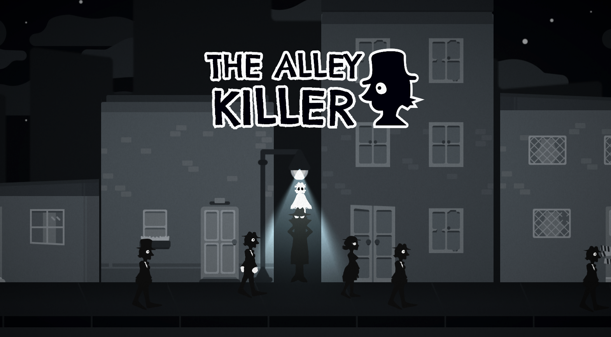

Projeto Digital · Ação Arcade 2D
The Alley Killer

The Alley Killer é um jogo 2D side-view de ação e arcade em uma metrópole noir dos anos 40. Você acompanha Black, um assassino capaz de ver espíritos: um fantasma entrega contratos de vingança e revela as características dos alvos. Transite entre os becos para localizar seus alvos entre as pessoas que passam e ataque no momento certo. Você tem três minutos para completar o maior número possível de contratos. Atuei como programador, em um projeto desenvolvido com mentoria da LumoLAB em duas semanas para a primeira fase.
Sobre o projeto
The Alley Killer tem como base a localização de alvos: use as características reveladas pelo fantasma para identificar a pessoa certa entre as que passam pelos becos, alternando os becos para encontrar seus contratos. Quando o alvo correto aparece, ataque no momento certo e execute as sequências com precisão para concluir o contrato e recuperar segundos no cronômetro.
Destaques
- Localização de alvos pela descrição revelada pelo fantasma
- Transição entre becos para procurar os contratos
- Identificação e execução do alvo no momento certo
- Loop arcade de 3 minutos com contratos e combos
- Ambientação noir em uma metrópole dos anos 40